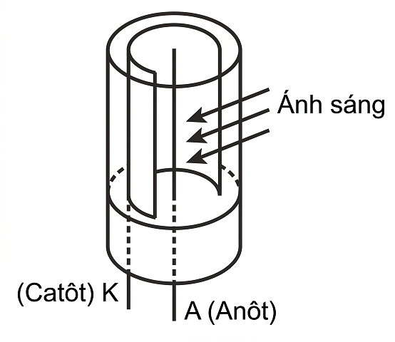
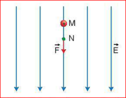
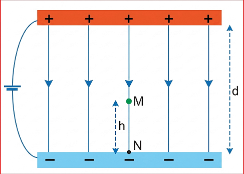

Đường dây điện cao thế.
Trong thực tế chúng ta gặp những đường dây dẫn điện cao thế, trung thế, hạ thế. Từ "thế" ở đây được hiểu như thế nào? Có liên quan tới điện thế năng đã học ở Bài 19 hay không?
1. Để đặt một điện tích \( q \) vào điểm M trong điện trường chúng ta cần cung cấp thế năng \( W_M \) cho điện tích \( q \). Điều này tương ứng với việc thực hiện một công \( A \) dịch chuyển điện tích \( q \) từ vô cực về điểm M. Hãy vận dụng công thức (19.4) và (19.5) để thu được công thức: \[ V = \frac{A}{q} \]
2. Tỉ số \( V = \frac{A}{q} \) như trên được gọi là điện thế của điện trường tại điểm M.
a) Hãy dự đoán điện thế \( V \) đặc trưng cho đại lượng nào của điện trường.
b) Xác định độ lớn điện tích \( q \) khi điện thế \( V \) có giá trị bằng công \( A \) thực hiện để dịch chuyển điện tích \( q \) từ vô cực về điểm M.
Điện thế tại một điểm trong điện trường đặc trưng cho điện trường tại điểm đó về thế năng, được xác định bằng công dịch chuyển một đơn vị điện tích dương từ vô cực về điểm đó.
Đơn vị của điện thế là vôn (kí hiệu là V), ngoài ra người ta còn dùng đơn vị kilôvôn (kV): 1 kV = 1 000 V.
a) Điện thế có giá trị đại số, dấu của điện thế phụ thuộc vào dấu của công A và dấu của điện tích q.
b) Cũng như chọn mốc thế năng, ngoài việc chọn mốc điện thế ở vô cực thì trong điện trường đều giữa hai bản phẳng người ta thường chọn mốc điện thế là bản nhiễm điện âm, còn mặt đất thường được chọn là mốc điện thế trong thực tiễn cuộc sống và kĩ thuật.
Chúng ta đã được học và đo hiệu điện thế. Hiệu điện thế \( U_{MN} \) mà chúng ta đo được chính là giá trị của hiệu giữa điện thế tại M và điện thế tại N:
Vì vậy U và V đều có chung đơn vị là vôn.
Trong thực tế người ta thường xét sự dịch chuyển một điện tích q từ điểm N tới điểm M nào đó trong điện trường.
Hãy vận dụng công thức \( V = \frac{A}{q} \) để chứng tỏ rằng công thực hiện để dịch chuyển điện tích q từ điểm N đến điểm M bằng: \[ A_{NM} = (V_M - V_N)q = U_{MN}q \] (20.3)
?
Tế bào quang điện chân không (Hình 20.1) gồm một ống hình trụ có một cửa sổ trong suốt, được hút chân không (áp suất trong khoảng \( 10^{-8} \) mmHg đến \( 10^{-6} \) mmHg). Trong ống đặt một catôt (cực âm) có khả năng phát xạ electron khi được chiếu sáng và một anôt (cực dương). Electron trong điện trường giữa hai cực sẽ dịch chuyển về phía anôt nếu \( U_{AK} > 0 \).

Hình 20.1. Cấu tạo của tế bào quang điện chân không
Cho hiệu điện thế \( U_{AK} = 45 \text{ V} \) được đặt vào giữa hai cực của tế bào quang điện. Khi chiếu xạ ánh sáng phù hợp để catôt phát xạ electron vào vùng điện trường giữa hai cực. Hãy tính công của điện trường trong dịch chuyển của electron từ catôt tới anôt.
Điện thế là một đại lượng gắn với điện trường, còn thế năng điện là đại lượng gắn với điện tích đặt trong điện trường. Trong công thức (20.1), công A mà chúng ta sử dụng để dịch chuyển điện tích q từ vô cực về điểm M cũng chính bằng thế năng \( W_M \) của điện tích q đặt tại M trong điện trường. Như vậy, thế năng điện và điện thế liên hệ với nhau bởi công thức:
?
Tính thế năng điện của một electron đặt tại điểm M có điện thế bằng 1 000 V.
Trong điện trường đều, xét một điện tích thử dương chuyển động dọc theo một đường sức điện từ điểm M đến điểm N. Ta thấy, chiều của vectơ cường độ điện trường E hướng theo chiều giảm của điện thế. Chọn chiều dương của trục tọa độ là chiều đường sức (Hình 20.2). Áp dụng công thức (18.1) ta có:
Kết quả trên cho thấy: trong điện trường đều, độ lớn cường độ điện trường bằng độ giảm của điện thế dọc theo một đơn vị độ dài đường sức.

Hình 20.2. Chuyển động của điện tích thử dọc theo một đường sức
Với điện trường bất kì, công thức (20.5) vẫn được áp dụng trong trường hợp hai điểm M và N ở rất gần nhau.
Cường độ điện trường tại một điểm M có độ lớn bằng thương của hiệu điện thế giữa hai điểm M và N trên một đoạn nhỏ đường sức chia cho độ dài đại số của đoạn đường sức đó.
Có hai bản phẳng song song cách nhau một khoảng d (Hình 20.3), được nối vào nguồn điện một chiều có hiệu điện thế 48 V. Chọn bản nhiễm điện âm làm mốc điện thế.

Hình 20.3
a) Xác định mối liên hệ giữa điện thế và cường độ điện trường tại một điểm trong điện trường đều giữa hai bản phẳng.
b) Áp dụng kết quả câu a để tính điện thế tại M nằm chính giữa khe hở của hai bản phẳng.
Giải:
a) Gọi N là điểm giao của đường sức đi qua M với bản nhiễm điện âm (Hình 20.3). \( V_N = 0 \) do điểm N nằm trên bản phẳng nhiễm điện âm được chọn làm mốc điện thế; \( MN = h > 0 \) vì MN thuận theo chiều đường sức, h chính là khoảng cách từ M tới bản nhiễm điện âm. Vận dụng công thức (20.5) vào điện trường đều giữa hai bản phẳng ta tìm được mối liên hệ giữa điện thế và cường độ điện trường tại điểm M:
\( E_M = \frac{V_M - V_N}{MN} \Rightarrow V_M = E_M \cdot h \)
b) Trường hợp điểm M nằm chính giữa khe hở hai bản phẳng tức là \( h = \frac{d}{2} \), ta có:
\( V_M = E \cdot h = \frac{U}{d} \cdot \frac{d}{2} = \frac{48}{2} = 24 \text{ V} \)
?
Vận dụng mối liên hệ giữa điện thế và cường độ điện trường để xác định điện thế tại một điểm cách mặt đất 5 m ở nơi có điện trường của Trái Đất là 114 V/m.
Câu 1: Đơn vị của điện thế là:
Câu 2: Công thức liên hệ giữa hiệu điện thế \( U_{MN} \) và điện thế \( V_M, V_N \) là:
Câu 3: Điện thế tại một điểm trong điện trường đặc trưng cho:
Câu 4: Một điện tích \( q = 2 \cdot 10^{-6} \text{ C} \) dịch chuyển từ vô cực về điểm M làm công của lực điện là \( 4 \cdot 10^{-4} \text{ J} \). Điện thế tại M là:
Câu 5: Trong điện trường đều, nếu khoảng cách giữa hai điểm dọc theo đường sức tăng 2 lần thì cường độ điện trường:
Bài 1: Tính công của lực điện khi một proton (\( q = 1,6 \cdot 10^{-19} \text{ C} \)) dịch chuyển từ điểm A có điện thế 500 V đến điểm B có điện thế 200 V.
Bài 2: Hai bản kim loại song song tích điện trái dấu tạo ra điện trường đều \( E = 2000 \text{ V/m} \). Khoảng cách giữa hai bản là 5 cm. Tính hiệu điện thế giữa hai bản.
Bài 3: Một hạt bụi có điện tích \( q = -10^{-8} \text{ C} \) nằm cân bằng trong điện trường đều giữa hai bản nằm ngang. Biết \( V_{bản trên} = 500 \text{ V} \), \( V_{bản dưới} = 0 \text{ V} \), khoảng cách \( d = 2 \text{ cm} \). Tính khối lượng hạt bụi (lấy \( g = 10 \text{ m/s}^2 \)).